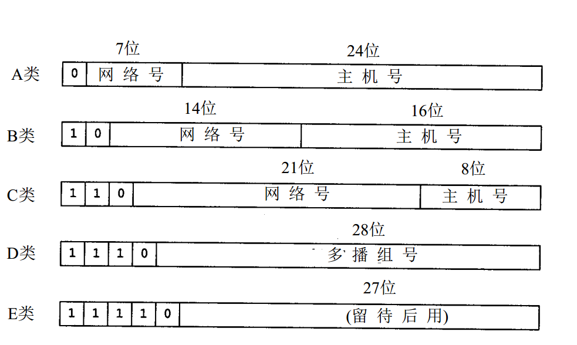

几个计算
知道ip地址和子网掩码后可以算出：
- 网络地址
- 广播地址
- 地址范围
- 主机数量
举例：
IP地址 192.168.100.5
子网掩码 255.255.255.0
下面介绍计算方法
将ip地址和子网掩码转化为二进制（单纯就计算来讲其实IP地址没必要全部转换，只需要转换到子网掩码分界部分即可，若分界恰好为小数点则完全不必转换），子网掩码连续全1的是网络地址，后面的是主机地址，例中转化后，
IP地址 11000000 10101000 01100100 00000101
子网掩码 11111111 11111111 11111111 00000000
（即下划线部分是网络地址，后面是主机地址）
然后将转换后的IP地址和子网掩码逐位相与（前面提到没必要全部转换的原因在此，全1照抄，全0与后全0，只需要转换0/1交界的部分）
这样相与计算后得出网络地址，最后再用点分十进制表示
例中以上相与结果即是网络地址，结果如下
二进制形式 11000000 10101000 01100100 00000000
点分十进制形式 192.168.100.0
将上面的网络地址中的网络地址部分不变，主机地址变为全1，结果就是广播地址，即将
11000000 10101000 01100100 00000000
写成
11000000 10101000 01100100 11111111
广播地址写成点分十进制形式为
192.168.100.255
地址范围就是含在本网段内的所有主机
网络地址+1即为第一个主机地址，广播地址-1即为最后一个主机地址，本例网络范围是
192.168.100.1~192.168.100.254
即在此范围内的地址都是一个网段
主机的数量=2^(二进制主机地址位数)-2
-2因为主机不包括网络地址和广播地址，例中二进制主机位数是8位，因此
主机数量=2^8-2=254
其他例子
IP地址128·36·199·3 子网掩码255·255·240·0。
网络地址：128.36.192.0
广播地址：128.36.192.255
地址范围：128.36.192.1~128.36.207.254
主机数量：2^12-2=4096
IP地址10.145.129.20 子网掩码255.255.248.0
网络地址：10.145.128.0
广播地址：10.145.135.255
地址范围：10.145.128.1~10.145.135.254
主机数量：2^11-2=2046
PS：从上面几个例子可以看出不论是子网掩码是标准的还是特殊的，计算网络地址、广播地址、地址数时只要把地址换算成二进制，然后从子网掩码处分清楚连续1以前的是网络地址，后是主机地址进行相应计算即可。
额外的补充：
IPv4由32位二进制组成；IPv6由128位二进制组成。
IP地址分为五大类，最常使用的是A类、B类和C类地址。具体如下
（1）A类地址(1.0.0.0-126.0.0.0)
A类地址第1字节为网络号，其它3个字节为主机号。
A类地址的网络号第一位固定为0，网络号只有7位可以使用，可以指派的网络号是2^7-2 = 126个。
网络号全是0（0000 0000）的IP地址是保留地址，意思是“本网络”。
网络号是127（0111 1111）的IP地址也是保留地址，作为本地环回软件测试。
A类地址的主机号占3个字节，每个A类网络中的最大主机数是2^24-2个。
主机号全是0的IP地址表示是“本主机”所连接到的单个网络。
主机号全是1的IP地址表示是该网络上的所有主机。
A类地址默认掩码为255.0.0.0
（2）B类地址(128.0.0.0-191.255.0.0)
B类地址的前两个字节为网络号，后两个字节为主机号。
B类地址的网络号第一、二位固定为10，网络号有14位可以使用，可以指派的网络号是2^14-1个。
B类地址网络号为128.0（1000 000 0000 0000）的IP地址是不指派的，所以可指派的网络号需要减一。
B类地址的主机号占2个字节，每个B类网络中的最大主机数是2^16-2个。
主机号全是0的IP地址表示是“本主机”所连接到的单个网络。
主机号全是1的IP地址表示是该网络上的所有主机。
B类地址默认掩码为255.255.0.0
（3）C类地址(192.0.0.0-223.255.255.0)
C类地址的前三个字节为网络号，最后一个字节为主机号。
C类地址的网络号第一、二、三位固定为110，网络号有21位可以使用，可以指派的网络号是2^21-1个。
C类地址网络号为192.0.0（1000 000 0000 0000 0000 0000）的IP地址是不指派的，所以可指派的网络号需要减一。
C类地址的主机号占1个字节，每个C类网络中的最大主机数是2^8-2个。
主机号全是0的IP地址表示是“本主机”所连接到的单个网络。
主机号全是1的IP地址表示是该网络上的所有主机。
C类地址默认掩码为255.255.255.0
（4）其他地址
D类地址
⑴ D类地址不分网络地址和主机地址，它的第1个字节的前四位固定为1110。
⑵ D类地址范围：224.0.0.1—239.255.255.254
E类地址
⑴ E类地址也不分网络地址和主机地址，它的第1个字节的前五位固定为11110。
⑵ E类地址范围：240.0.0.1—255.255.255.254
另外附送一张相当经典的图：
